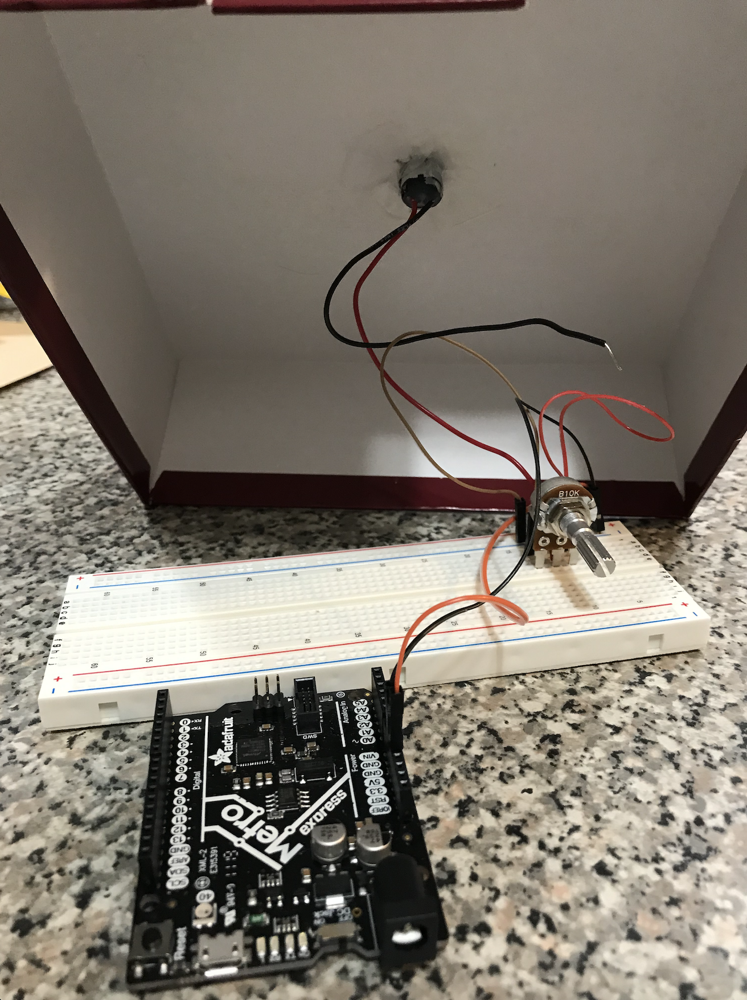

This week, the assignment was to build a kinetic sculpture using the breadboard, motor, and other kit parts as well as any supplies
available to us at home. The main challenge for me was to build something with very limited materials: in addition to kit parts, I
worked with only tape, cardboard, paper, and straws. Ideally, the parts would have been 3D printed and I would have had hot glue,
but the result I was able to achieve with what I had taught me a lot about how to anticipate real-world physics and design with constraints.
To start, I was interested in simply simulating the motion of a line moving around in a square, but with one end anchored to the bottom.
I was hoping to use this idea
I came up with an idea to implement this with some spring force, but due to the lack of suitable rubber bands or a spring to place in the middle,
I instead focused on the tools necessary for this motion to occur, namely, changing the position of the end of the line relative to the midpoint
of the square.
This led me to investigate ways of transferring rotational motion into linear motion, a common theme of many projects since
there are mechanisms by which this can be achieved. I chose the Scotch Yoke, which I subsequently modeled in Fusion, with animated joints.
I had the idea of using the Scotch Yoke to have two pictures move alternatively into and out of view, or else somehow across a stage.
I began wanting to hang the images off the ends of the wings of the yoke, so I came up with a way of stuffing a straw with tape to
attach it to a chopstick. This gave decent fit without the wing mechanism attached.
Then I moved on to trying to make a small initial platform. I used a cup and ruler to draw the circle, unsure of what exactly I wanted
to use to make the nib that would rotate with it. However, as I worked with the cardboard to complete this step, I realized I would
likely need light materials that would balance properly while still maintaining shape.
From there, I realized I need to somehow hold the cardboard in the oblong shape I wanted. I made an initial prototype with a lot of
tape, a bottle cap cut in half, and cardboard threaded along its inner contours. The tape created a lot of edges and friction, but
at least I could observe some of the physics that was less obvious in simulation and proceed to make adjustments.
Clearly, I needed a better yoke design. I also realized that the oblong portion needed to be sufficiently weighted or else the wings,
if just a bit too long, would cause the oblong portion to raise up as its sides were oddly weighed down. Therefore, I made an new
prototype with some cuttable but sufficiently strong wire that I found in my basement.
However, upon attaching this all together, I noted that any weight or friction would cause the chopstick to detach from the motor.
Without hot glue, I needed firm attachment, and the piece of cardboard that I was trying to use to join the chopstick and motor, along
with the tape, was insufficient. So I decided to scale down and try to support the pictures above the platform, while taping the motor
piece directly to the circle platform. I thus built a shorter support below the platform to hold the motor straight, also leaving a
window for me to turn the potentiometer.

I also decided to try to minimize the weight of the center portion by using some thinner available wire.
After trying to keep the wings from rotating (and only moving horizontally), I found that despite the Fusion simulation working for a
yoke whose center oblong portion length was the same as the diameter of the circle, because my materials were not optimally weighted or fitted,
it was very likely that the wings would tip of the platform, as shown below.
Therefore, I decided to make a shorter version, all with cardboard to have suitably stiff wings. I used a floss pick as a nib to rotate
around instead of a well fitted nib to minimize the chance of it getting caught in a corner. Then I attached some straws to hold up
images for me. I also made a shorter surrounding structure and cut a hole in the top to allow the new orientation of my pictures to
hold up. In imagining a scene to display, fencing came to mind. By accident, I made the top slit too narrow, causing the straws to bend
a bit as they each came to edge of their horizontal motion. Since they bent toward each other, I leaned into that and imagined a scene
where they would be fencing against each other, as seen in the video below.